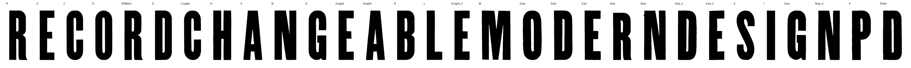

[
{
"glyph": "R",
"attempt": 1,
"model": "arrow-1.1",
"task_id": "01a04be1-46f8-7268-a85d-7abfaa984830",
"creation_id": "01a04be1-4706-76be-b9a8-c2f4809212fd",
"input": "glyphs/R.png",
"input_sha256": "3d4d6efe6606c45a2a1d69c4cbeb4bc058c0b907d0e496fb780f2f7b912b337e",
"kept_as": "svg/arrow/attempts/R-01-01a04be1.svg",
"viewbox": [
0.0,
0.0,
165.7,
384.0
],
"contours": 66,
"points": 287,
"ts": "2026-08-29T01:00:14-0400",
"iou_scan": 0.7904,
"best_region_iou_scan": null,
"regions": null,
"potrace_iou_scan": 0.993
},
{
"glyph": "R",
"attempt": 2,
"model": "arrow-1.1",
"task_id": "01a04bec-94b3-7457-91bc-2517e9da9a44",
"creation_id": "01a04bec-94c7-7be1-9379-25a0be5879a4",
"input": "glyphs/variants/R-sq768-m20.png",
"input_sha256": "dd4c4ce9b148e4b10d5d62acb4ec65d8831d78bc620b64b0e3c676aed6a5d6f1",
"kept_as": "svg/arrow/attempts/R-02-01a04bec.svg",
"viewbox": [
0.0,
0.0,
150.0,
150.0
],
"contours": 3,
"points": 132,
"ts": "2026-08-29T01:10:43-0400",
"iou_scan": 0.2958,
"best_region_iou_scan": 0.8549,
"regions": 2,
"potrace_iou_scan": 0.993
}
]
{
"895:fifteen": {
"n_caps": 6,
"cap_height_px": 983.5,
"baseline_px": 3418.0,
"glyphs": [
"R",
"E",
"C",
"O",
"R.fifteen",
"D"
],
"stem_px": 137.0,
"scale": 0.71174,
"stem_units": 97.5
},
"895:eight": {
"n_caps": 10,
"cap_height_px": 529.0,
"baseline_px": 2242.0,
"glyphs": [
"C.eight",
"H",
"A",
"N",
"G",
"E.eight",
"A.eight",
"B",
"L",
"E.eight_2"
],
"stem_px": 77.0,
"scale": 1.32325,
"stem_units": 101.9
},
"895:six": {
"n_caps": 12,
"cap_height_px": 397.5,
"baseline_px": 1530.0,
"glyphs": [
"M",
"O.six",
"D.six",
"E.six",
"R.six",
"N.six",
"D.six_2",
"E.six_2",
"S",
"I",
"G.six",
"N.six_2"
],
"stem_px": 62.0,
"scale": 1.76101,
"stem_units": 109.2
},
"895:five": {
"n_caps": 2,
"cap_height_px": 331.0,
"baseline_px": 950.0,
"glyphs": [
"P",
"D.five"
],
"stem_px": 53.5,
"scale": 2.1148,
"stem_units": 113.1
}
}
{
"archive_id": "bookoftypespecim00barnrich",
"title": "Book of type specimens. Comprising a large variety of superior copper-mixed types, rules, borders, galleys, printing presses, electric-welded chases, paper and card cutters, wood goods, book binding machinery etc., together with valuable information to the craft. Specimen book no.9",
"creator": [
"Barnhart, bros. & Spindler, firm, type founders, Chicago",
"De Young family",
"De Young, Charles, 1881-"
],
"publisher": "Chicago, Barnhart bros. & Spindler",
"date": "[1907]",
"ppi": 400,
"url": "https://archive.org/details/bookoftypespecim00barnrich",
"copyright_status": "NOT_IN_COPYRIGHT",
"contributor": "University of California Libraries",
"leaves": [
895
]
}